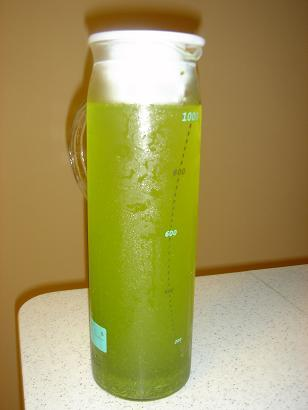

How To Cold Brew Green Tea (It's Smooth and Tastes Great)
Strong and Fizzy
Soda Pop and Energy Drinks
Home Tea Soda Energy Drinks Coffee Blog About Home » Tea » How To Cold Brew Green Tea (It’s Smooth and Tastes Great)How To Cold Brew Green Tea (It’s Smooth and Tastes Great)
By Chip , last updated November 19, 2017 Leave a Comment
Of all the varieties of tea brewed from the Camellia Sinensis plant, green tea is perhaps the one with the most storied reputation. Despite its bitter taste, people buy and drink it in droves, in no small part to the numerous health benefits associated with this form of tea. Just look at that WebMD article.
Though they eschew the idea of green tea being a magic weight loss formula, medical professionals are intrigued by the catechin content it holds, something that may help it improve blood flow and cholesterol.
In addition to that, though, it may also help with stabilizing blood sugar levels and helping improve brain function, helpful facts for anyone, but of value to individuals who may be at risk for degenerative diseases like Alzheimer’s.
It’s more than enough to get most people interested, and one of the first things anyone asks is, “how is this stuff made?”
Read on to learn how to both hot brew and cold brew green tea.
Contents
1 How the Tea Is Brewed 1.1 Traditional Tea Brewing 1.2 How To Cold Brew Green Tea 2 In SummationHow the Tea Is Brewed
In all tea brewing methods, the first thing that is required is enough tea leaves to saturate some hot water. As we mentioned, leaves for green tea come from the Camellia Sinensis plant. It’s a more complex matter than just plucking off leaves at random, though. There are further variations within the green tea family, so even the growing process can affect the final product.
Tea plants can be grown in the shade or out in the sun. It might come from small batches, meticulously cared for by hand, or it could come from expansive plantations that spread many acres. Even in these larger areas, though, tea is still picked by hand to help preserve quality.
Harvesters may pluck the leaves from a tea plant three or four times a year, taking care to do as little damage to the plants as possible so that they can renew themselves for the next “flush.” Leaves picked during the first flush (spring) will generally yield the highest quality brews.
After the tea leaves are picked, manufacturers must process them lightly to convert them to green tea form. This involves a process of drying the leaves, which manufacturers can carry out via an array of old-school or modern techniques.
They may choose to simply dry the leaves out in the sun or pan-cook them. In larger operations, they could instead oven dry them or tumble the leaves to remove the necessary amount of moisture. They may also re-fire them after a period to infuse additional flavors or give them a longer shelf life.
The final process for preparing the leaves is shaping. This could be done via basic hand-rolling, which molds the leaves into different shapes. Alternatively, large manufacturers have also turned to the process of machine rolling, which ensures a consistent temperature and form to the leaves as they are rolled.
This article from How Products Are Made provides some insight on how this step of the process is carried out. Once the tea leaves are ready, they are then shipped out to eager customers looking to brew tea in the comfort of their homes.
Traditional Tea Brewing
Almost all normal green tea brewing methods involve mixing the tea leaves, in whatever form they take, with hot water. One reliable method that many traditionalists espouse is either steeping tea bags or loose leaf tea into a cup of hot water to draw out the subtle flavors (and helpful nutrients) into the final tea mixture.
When using tea bags, this is a simple enough process. Just bring some water to just shy of boiling, add it to a cup, then insert the tea bag and let it seep for a few minutes. While convenient, enthusiasts often frown upon this method as it is somewhat imprecise, and the mere use of a tea bag with fannings can decrease the flavor of the tea.
The loose-leaf method is often preferred and requires an additional level of care and patience. First, you’ll need to measure out your tea and water in a specific ratio. The rule of thumb is two grams of tea for every six ounces of water. You should measure this by weight, as the shape of the leaves can vary greatly.
The water should be heated, but not boiling to preserve the flavoring of the green tea. If the water is too hot, the tea may release too many tannins, which could strip the tea of its sweetness and leave you with an overly bitter concoction that is not pleasant. The ideal temperature is between 160-180 degrees.
You can place the tea leaves directly into the water, then remove them with a strainer, or use a tea infuser, tea stick, or similar device to dangle into the water. After a period of a few minutes, the tea should be sufficiently steeped and ready for consumption.
In addition to the increased flavor, tea aficionados note that you can get 2-3 good uses from a single batch of leaves this way, adding to the longevity of your tea supply.
Those that wish to get a bit “fancier” with their brewing methods might also take to using a French Press, much in the same way they would use it to brew coffee or get a specially designed tea machine that uses automation to control the brewing process. These are pricier options, but, they generally result in a higher-quality product, excellent if you’re all about getting the best cup of tea possible.
How To Cold Brew Green Tea
The cold brew process is one that has been gaining traction for several years now. In addition to being a great way to have ice-cold, summer-ready tea on demand, the cold brew process is more difficult for tea-brewing newbies to ruin.
The traditional, hot brew methods have several areas in which neophytes can spoil the process, leaving themselves with substandard, overly-bitter, terrible tasting tea. The cold brew process, because it is simpler, provides a set-it-and-forget-it level of ease to having smooth, sweet tasting green tea without much hassle.
On top of that, though, there is some evidence to suggest that cold brew green tea might edge out its hot brew counterparts regarding healthiness. An article from Wonder How To explains:
Prevention hypothesized that the cold-brewed version was agitated before it was left to brew overnight, and since agitation can release more antioxidants, that led to the surprising lab results. So before you put your cold-brewed tea to rest, maybe you should give the container a good shake or three.”
They go on to cite an interesting study that implies cold-brewed tea might also have increased levels of one antioxidant in particular:
Meanwhile, a 2012 study by Professor Jeng-Leun Mau of National Chung Hsing University, Taiwan, showed that cold-brewed green tea that was steeped for 12 hours had a high level of polyphenols (the antioxidants that make green tea so incredibly healthy) that were equal to or greater than tea steeped in hot water for 5 minutes.”
Even if the health benefits aren’t your primary concern, the fact that it’s easier and tastes better might be all the reason you need to give it a try. If that is the case, you’re in for an easy time. First, measure out the amount of tea that you want. Usually four to eight teaspoons at a time.
Rinse off the tea leaves to remove any impurities. Then, put the tea in a glass container and add cold water. Seal it, and let it sit in the refrigerator for 6-12 hours. Strain the tea leaves before you drink it, and you’re good to go.
There’s no need to check your water temperature or do constant taste tests to make sure you’re getting the process right. So, if you’ve resigned yourself to not being as skilled at the hot brewing process, or if you just want to try something new, the cold brewing method provides an easy alternative that is exceedingly difficult to fumble (if you’re OK with waiting longer to taste the fruits of your labor). You can also use this method to brew other tea varieties or coffee if you so choose.
Once you get the hang of it, you can try playing around with different herbal additives, altering your ratios, and experimenting with different sweeteners if you want to spruce things up. Popular options beyond simple sugar include syrup, honey, and agave nectar.
In Summation
Green tea is one of the most popular standard tea varieties on the planet. Some enthusiasts are drawn by its acquired taste, but many more are attracted by the unique health benefits that it offers. The antioxidants contained within green tea could help with various heart and brain conditions, as well as aid individuals trying to control their blood sugar levels.
Traditional methods for brewing green tea are vast, though, almost all involve using hot water in some form, and take a deal of skill to get correct. It is easy for those new to the process to mess it up, which is where the cold brew method comes in.
Cold brewing green tea is a simpler, albeit longer process, that removes the need for precise measurements and constant monitoring. It may also confer some additional health benefits if certain studies are to be believed. If you want to learn more about green tea, you could check out Teatulia’s guide on the green tea phenomenon, or consult the NIH for more information on green tea’s unique health benefits.
If you like this post, please share it!
Popular Posts:
Best Keurig Coffee Maker: Which Makes Tasty Coffee Cheaply? How To Make Your Own Tea (Garden Fresh, Great Taste) How to Make Dandelion Tea (Sunny, Golden, and Tasty) The Best Tea Brands (3 Amazing Teas That Win The Taste Test) The Incredible History of Soda (A Tale of Yummy Drinks) Organic Energy Drinks (Energy The Tasty & Natural Way) Best Coffee For Cold Brew: Which One Tastes Great? MiO Energy Ingredients (What’s In That Amazing Bottle?)Leave a Reply Cancel reply
Post Categories
Coffee Energy Drinks Soda Tea About | Contact | Privacy Policy | Terms of Service Strong & Fizzy is a participant in the Amazon Services LLC Associates Program, an affiliate advertising program designed to provide a means for sites to earn advertising fees by advertising and linking to amazon.com.© 2020 · Strong & Fizzy